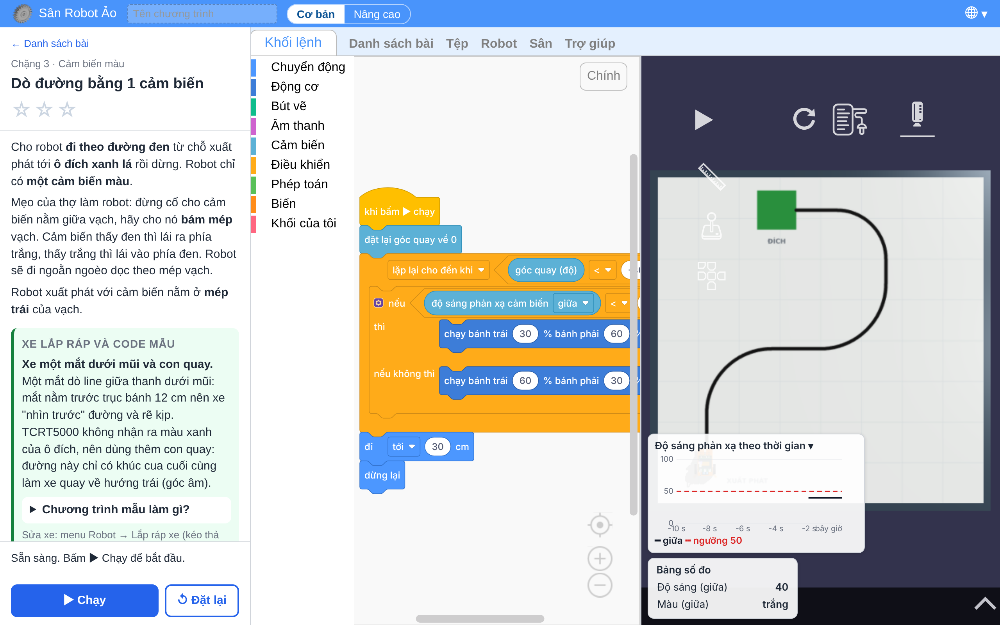
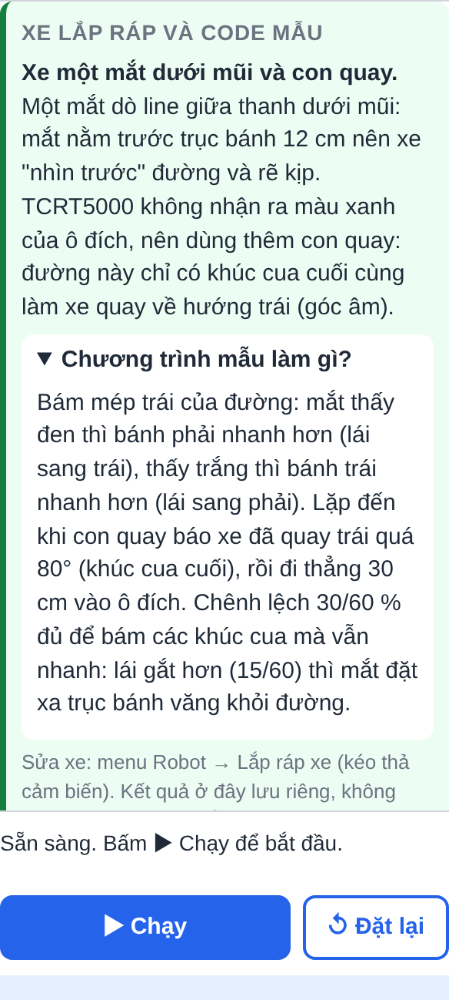
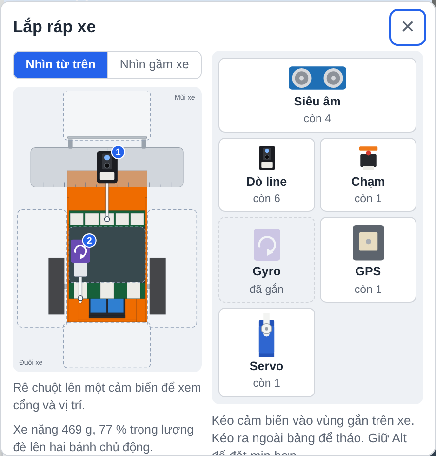
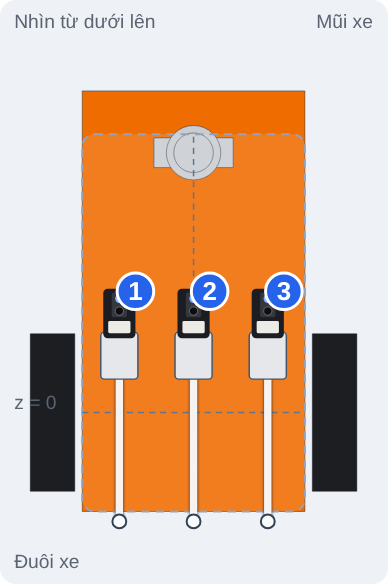

1. Xe mẫu và code mẫu là gì
Mỗi bài trong Danh sách bài có sẵn một robot của bài. Ngoài robot đó, 23 bài còn có thêm một xe mẫu: chiếc xe kiểu mBot lắp mô-đun, đã gắn sẵn cảm biến ở chỗ hợp lí cho sân của bài. Đi kèm là một code mẫu: chương trình khối lệnh giải được bài với chiếc xe đó.
Bài làm và số sao khi dùng xe mẫu được lưu riêng. Học sinh mở xe mẫu ra xem không làm mất bài làm và số sao đã có với robot của bài.
Code mẫu giống lời giải mẫu trong sách: xem để hiểu cách làm, rồi tự sửa, tự làm lại bằng robot của bài để lấy sao.
2. Mở xe và code mẫu
- Ở trang chính, bấm menu Danh sách bài (Lesson list).
- Bấm vào một bài, ví dụ “Dò đường bằng 1 cảm biến” trong Chặng 3 · Cảm biến màu.
- Ở khung đề bài bên trái, kéo xuống mục Xe lắp ráp và code mẫu (Built car and sample code), bấm nút Dùng xe và code mẫu (Use car and sample code).
- Trang mở lại bài: robot của bài được thay bằng xe mẫu, code mẫu nằm sẵn trong tab Khối lệnh (Blocks).
- Bấm ▶ Chạy (Run) để xem xe làm bài. Bấm ↺ Đặt lại (Reset) để đưa xe về chỗ xuất phát.

Khi đang dùng xe mẫu, mục Xe lắp ráp và code mẫu đổi thành:
- Tên xe và lí do gắn cảm biến ở những chỗ đó.
- Chương trình mẫu làm gì? (What does the sample program do?): bấm để mở lời giải thích code.
- ↺ Nạp lại xe và code mẫu (Reload car and sample code): trả cả xe lẫn chương trình về đúng mẫu ban đầu.
- ← Về robot của bài (Back to lesson robot): quay về robot của bài và bài làm cũ.

Thêm &xe=mau vào cuối địa chỉ của bài thì bài mở thẳng bằng xe mẫu. Ví dụ:
https://ntb866-ux.github.io/SiRo-project1/index.html?baiTap=03-cam-bien-mau/04-do-line-1-cam-bien&xe=mau
Bảng ở mục 8 có sẵn đường dẫn cho từng bài.
3. Xe mẫu có cảm biến nào, đặt ở đâu, vì sao
Mỗi bài chỉ gắn những cảm biến cần cho bài đó. Xe càng ít đồ thì càng nhẹ, học sinh càng dễ thấy cảm biến nào làm việc gì. Có 9 kiểu xe mẫu:
| Xe mẫu | Cảm biến và chỗ gắn | Dùng ở bài |
|---|---|---|
| Xe trần (không cảm biến) | Không có. Chỉ có hai motor, trong motor có bộ đếm vòng. | Hiệu chỉnh động cơ |
| Xe trần, motor phải yếu 8 % | Như trên, motor phải cố ý yếu hơn giống robot của bài. | Xe bị lệch: bù cho motor yếu |
| Xe gọn chỉ có con quay | Con quay (gyro) trên nắp mạch chủ. | Di chuyển, Vòng lặp, Quay 90° trên sân băng |
| Xe có tấm cản trước | Công tắc chạm giữa thanh dưới mũi, sau tấm cản. Con quay. | Chạm tường thì dừng |
| Xe siêu âm mũi | Siêu âm HC-SR04 trên giá mũi, nhìn thẳng ra trước. Con quay. | Dừng cách tường, Đỗ xe, Men theo tường, Mê cung |
| Xe siêu âm mũi và con quay | Như trên. | Giữ hướng khi bị đẩy lệch |
| Xe một mắt dưới gầm | Một mắt dò line TCRT5000 dưới gầm, ngay giữa hai bánh. Con quay. | Dừng ở vạch, Đếm vạch, Phân loại màu |
| Xe một mắt dưới mũi và con quay | Một mắt dò line giữa thanh dưới mũi, trước trục bánh 12 cm. Con quay. | Dò đường bằng 1 cảm biến |
| Xe ba mắt dưới gầm | Ba mắt dò line dưới gầm, cách nhau 3 cm, trước trục bánh 4 cm. Con quay. | Dò đường cua gắt bằng 3 cảm biến |
Con quay (gyro): giữ cho xe đi thẳng, quay đúng góc
Con quay đo tốc độ quay của thân xe (độ mỗi giây). Cộng dồn tốc độ quay theo thời gian thì ra góc đã quay. Khối đi tới … cm và quay phải ↻ … độ đọc góc này liên tục: xe lệch khỏi hướng thì bánh bên kia được cho chạy nhanh hơn để kéo xe về. Vì thế hầu hết xe mẫu đều giữ con quay.
Con quay giống cái la bàn nhỏ trong xe: nó biết xe đã xoay bao nhiêu độ, nên xe tự sửa khi bị lệch.
Công tắc chạm: tấm cản ép vào thì báo
Công tắc chạm là một công tắc cơ: tường ép tấm cản lùi lại, tấm cản ấn công tắc, mạch đóng, khối cảm biến chạm đang bị nhấn? thành đúng. Gắn ngay sau tấm cản ở giữa mũi để chạm tường từ chính diện là bấm được.
Giống bấm chuông cửa: có gì đẩy vào thì chuông kêu.
Siêu âm: đo khoảng cách bằng tiếng vọng
HC-SR04 phát một chùm siêu âm (40 kHz) rồi đo thời gian t tới khi nghe tiếng vọng. Âm đi và về nên khoảng cách d = v·t / 2, với tốc độ âm trong không khí v ≈ 343 m/s. Gắn trên giá mũi, nhìn thẳng ra trước, vì bài cần biết vật cản phía trước. Bài mê cung không cần ba cảm biến: xe quay để “nhìn” sang phải, sang trái bằng chính cảm biến đó.
Giống con dơi: kêu một tiếng rồi nghe tiếng vọng. Tiếng vọng về càng lâu thì tường càng xa.
Mắt dò line TCRT5000: nhìn sáng tối, không nhìn màu
Mắt có một đèn hồng ngoại chiếu xuống sân và một đầu thu đo ánh sáng hắt lên. Nền trắng tán xạ nhiều (đo được khoảng 90), vạch đen hấp thụ gần hết (khoảng 11). Đèn chỉ phát một vùng bước sóng hồng ngoại, nên mắt không phân biệt màu: nó chỉ biết mặt sân “sáng” hay “tối” với hồng ngoại. Trên sân phân loại màu, ô đỏ đo khoảng 98, ô xanh lá khoảng 69, nên code mẫu phân biệt đỏ và xanh bằng con số độ sáng chứ không bằng khối “thấy màu”.
Mắt dò line giống một chiếc đèn pin chiếu xuống đất kèm một con mắt nhỏ. Giấy trắng hắt ánh sáng lại nhiều, vạch đen “nuốt” ánh sáng. Mắt chỉ biết sáng hay tối, không biết đỏ hay xanh.
Vì sao mắt dò line lúc ở gầm, lúc ở mũi?
Dưới gầm, giữa hai bánh (dừng ở vạch, đếm vạch, phân loại màu): khi mắt thấy vạch thì tâm xe cũng đang ở trên vạch, dừng ngay là đúng chỗ. Mắt đặt dưới mũi sẽ làm xe dừng sớm 12 cm.
Dưới mũi, trước trục bánh 12 cm (dò đường 1 cảm biến): mắt “nhìn trước” khúc cua nên xe kịp rẽ trên đường cong mềm.
Ba mắt dưới gầm, trước trục bánh 4 cm (đường có góc vuông): ở góc vuông xe phải quay tại chỗ. Một điểm cách trục quay r thì chạy với tốc độ v = ω·r. Mắt ở 12 cm quét ngang nhanh gấp 3 lần mắt ở 4 cm, lướt qua đường đen rộng 2 cm nhanh tới mức chương trình chưa kịp đọc. Đặt gần trục thì mắt quét chậm và bắt được đường.
Thử quay người tại chỗ, tay duỗi thẳng: đầu ngón tay đi một vòng lớn và nhanh, còn khuỷu tay đi vòng nhỏ và chậm. Mắt đặt xa giống đầu ngón tay, dễ lướt qua vạch mà không kịp thấy.
4. Đọc và sửa code mẫu
Đọc
- Mở Chương trình mẫu làm gì? trong khung đề bài để đọc ý chính trước.
- Đọc khối lệnh từ trên xuống dưới, bắt đầu ở khối
khi bấm ▶ chạy. Khối nằm lọt bên tronglặp lạihaynếu … thìlà phần được lặp, hoặc chỉ chạy khi điều kiện đúng. - Bấm ▶ Chạy và nhìn xe chạy cùng lúc với đọc khối. Bảng Bảng số đo và đồ thị Độ sáng phản xạ theo thời gian ở góc sân cho thấy cảm biến đang đọc được số nào.
Ví dụ code mẫu của bài “Dò đường bằng 1 cảm biến” (đúng chữ trên khối):
khi bấm ▶ chạy
đặt lại góc quay về 0
lặp lại cho đến khi góc quay (độ) < -80
nếu độ sáng phản xạ cảm biến giữa < 50 thì
chạy bánh trái 30 % bánh phải 60 %
nếu không thì
chạy bánh trái 60 % bánh phải 30 %
đi tới 30 cm
dừng lại
Đọc thành lời: “Mắt thấy đen (dưới 50) thì bánh phải chạy nhanh hơn, xe lái sang trái. Thấy trắng thì bánh trái nhanh hơn, xe lái sang phải. Cứ thế xe bám mép trái của đường. Khi con quay báo xe đã quay trái quá 80° (khúc cua cuối) thì đi thẳng 30 cm vào ô đích.”
Khối đọc mắt dò line vẫn mang tên độ sáng phản xạ cảm biến giữa / trái / phải (nằm trong nhóm Cảm biến). Trên xe mẫu, khối này đọc mắt dò line TCRT5000. Cách xe chọn mắt nào là “giữa”, “trái”, “phải” xem ở mục 6.
Sửa
- Bấm vào ô số trên khối để đổi số, kéo khối mới từ các nhóm bên trái (Chuyển động, Động cơ, Cảm biến, Điều khiển…). Chương trình tự lưu.
- Sửa xong bấm ↺ Đặt lại rồi ▶ Chạy để thử.
- Sửa hỏng: bấm ↺ Nạp lại xe và code mẫu. Chương trình và xe trở về đúng mẫu, mọi chỗ đã sửa bị bỏ.
Tải lại trang thì chương trình đã sửa vẫn được giữ, còn xe thì luôn trở về đúng xe mẫu (chỗ đã đổi ở bảng Lắp ráp xe không giữ lại). Muốn có lại đúng code mẫu thì phải bấm ↺ Nạp lại xe và code mẫu.
Thử sửa gì thì học được nhiều?
- Dò đường bằng 1 cảm biến: đổi 30/60 thành 15/60. Xe lái gắt hơn, mắt ở xa trục bánh văng khỏi đường. Vì sao?
- Dừng cách tường 20 cm: đổi
đặt tốc độ 30 %thành 80 %. Xe dừng gần tường hơn hay xa hơn? (Xe nhanh thì trôi xa hơn sau lệnh dừng: động năng tỉ lệ với bình phương tốc độ.) - Dừng ở vạch đen: đổi ngưỡng 50 thành 95 hoặc 5. Chuyện gì xảy ra? Xem số đo trên nền trắng và trên vạch để chọn ngưỡng.
- Quay đúng 90° trên sân băng: bỏ đoạn quay chậm, chỉ quay nhanh tới 88°. Xe quay lố bao nhiêu?
5. Bài code mẫu chỉ đạt 2 sao, và vì sao
Code mẫu luôn hoàn thành nhiệm vụ (sao 1). Phần lớn bài đạt đủ 3 sao. Các bài dưới đây thì không, vì giới hạn của chiếc xe chứ không phải do chương trình sai:
| Bài | Code mẫu đạt | Vì sao |
|---|---|---|
| Vẽ hình vuông | ★★☆ | Sao 3 cần khối hạ bút. Xe lắp mô-đun chưa có bút vẽ. Muốn đủ 3 sao, dùng robot của bài. |
| Bánh to, bánh nhỏ | ★★☆ | Bài so robot bánh to với robot bánh nhỏ. Xe lắp mô-đun chỉ có một cỡ bánh (đường kính 6,37 cm, chu vi 20 cm), nên không lấy được sao so sánh hai cỡ bánh. |
| Đi 1 mét trong đúng 4 giây | 1–3 ★ | Sao 2 và 3 đòi thời gian đúng tới 0,05 giây. Khối đợi … giây đếm theo đồng hồ máy tính: máy chậm hay đang bận thì mỗi lượt lệch vài phần trăm giây, nên số sao đổi giữa các lượt chạy. |
| 4 bài Bút vẽ và đa giác | Chưa có mẫu | Các bài này chấm bằng nét bút. Xe chưa có bút nên chưa làm được. |
Hẹn giờ giống đếm nhẩm “một, hai, ba” rồi dừng: mỗi lần đếm nhanh chậm khác nhau một chút. Đếm số vòng bánh thì chính xác hơn, vì bánh quay bao nhiêu vòng là xe đi bấy nhiêu.
Mũi xe mẫu dài (tấm cản cách trục bánh 15,5 cm, robot của bài khoảng 8 cm) và đuôi ngắn (4 cm, robot của bài 12 cm). Ở bài Chạm tường thì dừng và Đỗ xe giữa hai xe, khi dùng xe mẫu, chỗ xuất phát và vùng chấm điểm được dời tương ứng để “mũi chạm tường”, “đỗ chính giữa” vẫn đúng nghĩa. Vì vậy con số trong code mẫu của hai bài này không chép sang robot của bài được.
Ở bài Phân loại màu, ô vàng hắt hồng ngoại gần bằng ô đỏ nên khó tách: đoạn cuối code mẫu đi theo quãng đường đo sẵn.
6. Tự lắp xe ở bảng Lắp ráp xe
- Đang dùng xe mẫu, bấm menu Robot → Lắp ráp xe (kéo thả cảm biến) (Robot → Build car (drag and drop sensors)). Bảng Lắp ráp xe mở trên sân.
- Bên trái là sơ đồ xe. Nút Nhìn từ trên (Top view) và Nhìn gầm xe (Underside view) đổi hướng nhìn. Mắt dò line dưới gầm chỉ thấy và gắn được ở Nhìn gầm xe.
- Bên phải là khay linh kiện: Siêu âm, Dò line, Chạm, Gyro, GPS, Servo (Ultrasonic, Line sensor, Touch, Gyro, GPS, Servo), kèm số còn lại.
- Gắn: kéo một linh kiện từ khay thả vào vùng gắn trên xe (vùng được tô sáng). Giữ Alt để đặt mịn hơn. Siêu âm có 4 giá: trước, trái, phải, sau.
- Tháo: kéo linh kiện ra ngoài bảng, hoặc bấm nút Tháo (Remove) cạnh nó. Tháo hết cảm biến (Remove all sensors) tháo tất cả. Về mặc định (Reset to default) đưa về bản lắp mặc định.
- Rê chuột lên một cảm biến để xem nó cắm ở cổng nào và nằm ở đâu. Đóng bảng bằng nút ×, rồi bấm ▶ Chạy để thử.


- giữa: mắt nằm gần đường giữa xe nhất.
- trái / phải: mắt gần giữa nhất ở bên trái / bên phải xe.
- Xe vừa có mắt dưới mũi vừa có mắt dưới gầm thì khối
độ sáng phản xạ cảm biến …đọc mắt dưới mũi. Muốn khối đọc mắt dưới gầm thì tháo hết mắt dưới mũi.
Cho học sinh dời mắt dò line của bài “Dừng ở vạch đen” từ gầm ra dưới mũi, chạy lại và đo xe dừng sai bao nhiêu cm. Hoặc ở bài 3 cảm biến, dời ba mắt ra mũi rồi xem xe có qua được góc vuông không. Học sinh tự thấy vì sao chỗ gắn cảm biến quan trọng như chương trình.
7. Gợi ý dùng trong lớp
- Dự đoán, chạy, giải thích: chiếu code mẫu, cho học sinh đoán xe sẽ làm gì trước khi bấm ▶ Chạy, rồi giải thích chỗ đoán sai.
- Gỡ kẹt: học sinh làm mãi không qua thì mở xe mẫu xem cách làm, sau đó bấm ← Về robot của bài và tự viết lại. Sao chỉ tính khi làm bằng robot của bài.
- Sửa một chỗ: giao mỗi nhóm đổi một con số (ngưỡng, tốc độ, góc) và báo cáo kết quả, như ở mục 4.
- So sánh hai robot: cùng một bài, so xe mẫu với robot của bài: cảm biến khác chỗ, chương trình khác chỗ nào?
8. Danh sách 23 bài có xe và code mẫu
Bấm tên bài để mở thẳng bài đó bằng xe mẫu.
| Chặng | Bài | Xe mẫu | Code mẫu đạt |
|---|---|---|---|
| Chặng 1 · Di chuyển | Tiến tới ô đích | Xe gọn chỉ có con quay | ★★★ |
| Chặng 1 · Di chuyển | Rẽ tới ô đích | Xe gọn chỉ có con quay | ★★★ |
| Chặng 1 · Di chuyển | Đỗ xe vào bãi | Xe gọn chỉ có con quay | ★★★ |
| Chặng 1 · Di chuyển | Đi qua 3 điểm theo thứ tự | Xe gọn chỉ có con quay | ★★★ |
| Chặng 1 · Di chuyển | Vẽ hình vuông | Xe gọn chỉ có con quay | ★★☆ |
| Chặng 2 · Vòng lặp và biến | Hình vuông bằng vòng lặp | Xe gọn chỉ có con quay | ★★★ |
| Chặng 2 · Hiệu chỉnh động cơ | Một vòng bánh đi bao xa? | Xe trần (không cảm biến) | ★★★ |
| Chặng 2 · Hiệu chỉnh động cơ | Quay đúng một góc vuông | Xe trần (không cảm biến) | ★★★ |
| Chặng 2 · Hiệu chỉnh động cơ | Bánh to, bánh nhỏ | Xe trần (không cảm biến) | ★★☆ |
| Chặng 2 · Hiệu chỉnh động cơ | Xe bị lệch: bù cho motor yếu | Xe trần, motor phải yếu 8 % | ★★★ |
| Chặng 2 · Hiệu chỉnh động cơ | Đi 1 mét trong đúng 4 giây | Xe trần (không cảm biến) | 1–3 ★ |
| Chặng 2 · Bút vẽ và đa giác | Vẽ tam giác đều | Chưa có (xe chưa có bút vẽ) | |
| Chặng 2 · Bút vẽ và đa giác | Vẽ lục giác đều (tổ ong) | Chưa có (xe chưa có bút vẽ) | |
| Chặng 2 · Bút vẽ và đa giác | Vẽ ngôi sao năm cánh | Chưa có (xe chưa có bút vẽ) | |
| Chặng 2 · Bút vẽ và đa giác | Vẽ ngôi nhà theo hình mẫu | Chưa có (xe chưa có bút vẽ) | |
| Chặng 3 · Cảm biến chạm và khoảng cách | Chạm tường thì dừng | Xe có tấm cản trước | ★★★ |
| Chặng 3 · Cảm biến chạm và khoảng cách | Dừng cách tường 20 cm | Xe siêu âm mũi | ★★★ |
| Chặng 3 · Cảm biến chạm và khoảng cách | Đỗ xe giữa hai xe | Xe siêu âm mũi | ★★★ |
| Chặng 3 · Cảm biến chạm và khoảng cách | Đi men theo tường | Xe siêu âm mũi | ★★★ |
| Chặng 3 · Cảm biến chạm và khoảng cách | Thoát mê cung nhỏ | Xe siêu âm mũi | ★★★ |
| Chặng 3 · Cảm biến màu | Dừng ở vạch đen | Xe một mắt dưới gầm | ★★★ |
| Chặng 3 · Cảm biến màu | Đếm vạch, dừng ở vạch số 4 | Xe một mắt dưới gầm | ★★★ |
| Chặng 3 · Cảm biến màu | Phân loại màu: đỏ rẽ trái, xanh rẽ phải | Xe một mắt dưới gầm | ★★★ |
| Chặng 3 · Cảm biến màu | Dò đường bằng 1 cảm biến | Xe một mắt dưới mũi và con quay | ★★★ |
| Chặng 3 · Cảm biến màu | Dò đường cua gắt bằng 3 cảm biến | Xe ba mắt dưới gầm | ★★★ |
| Chặng 3 · Con quay (gyro) | Quay đúng 90° trên sân băng | Xe gọn chỉ có con quay | ★★★ |
| Chặng 3 · Con quay (gyro) | Giữ hướng khi bị đẩy lệch | Xe siêu âm mũi và con quay | ★★★ |